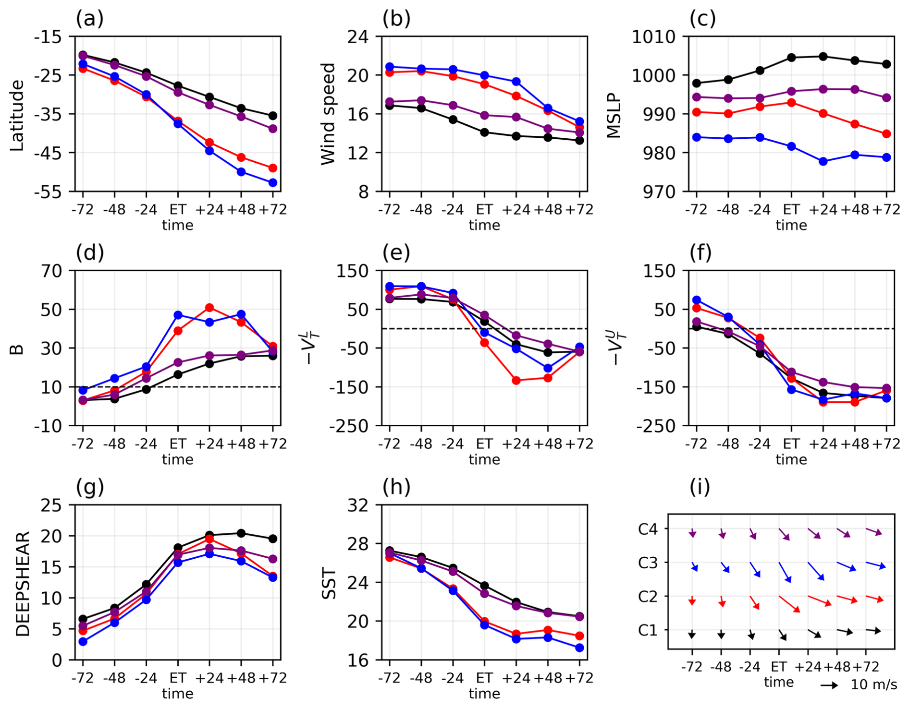
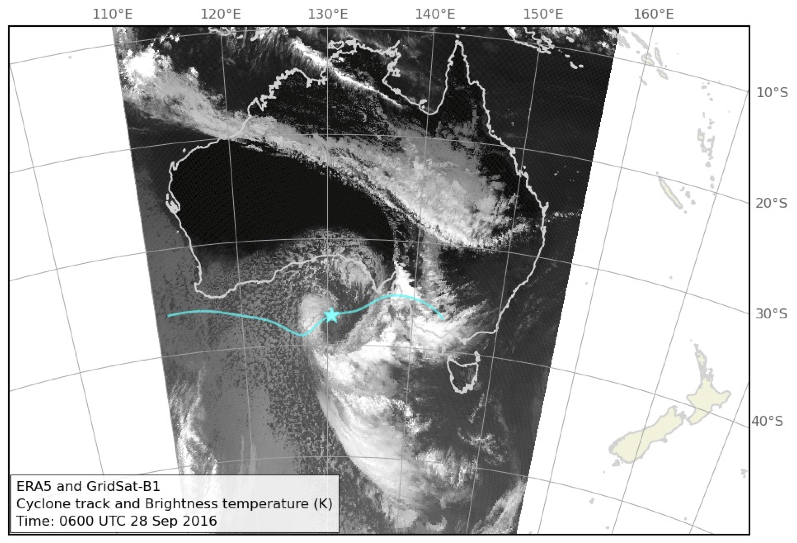
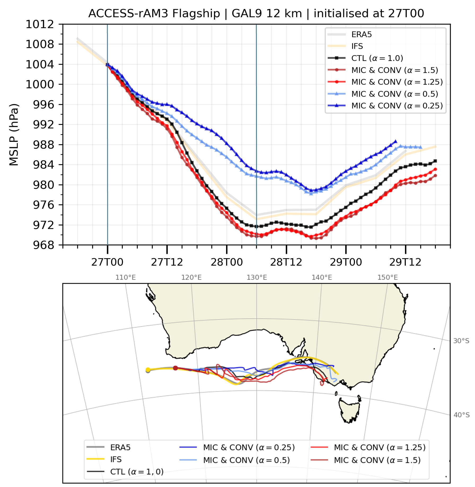
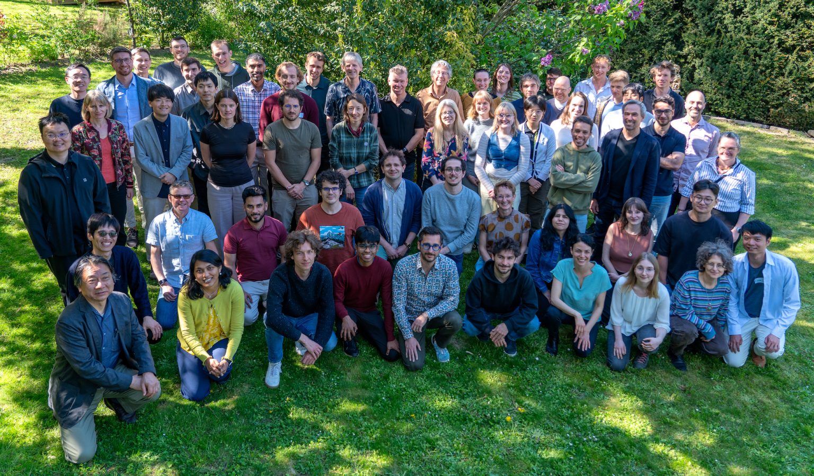
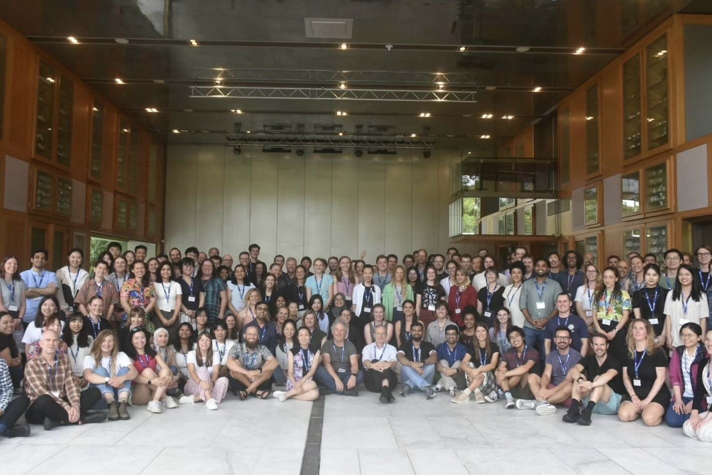

Attended EGU General Assembly 2026, Vienna, Austria
View poster (PDF) →
Dynamics of midlatitude weather systems · Extratropical-tropical weather system interactions
Understanding weather systems
Hi, I'm Chenhui Jin, a postdoctoral researcher studying the dynamics of midlatitude weather systems and the interactions between extratropical-tropical weather systems.
Latest news
Attended Diabatics 2026 Workshop, Wolkersdorf, Austria
View presentation slides (PDF) →
Research highlights
01 · Cyclone phase transitions

From tropical to extratropical cyclones
Explore how tropical cyclones transition into extratropical cyclones, and how the transitions affect the downstream weather
02 · Explosive cyclogenesis

How extratropical cyclones develop explosively?
Investigating the mechanisms behind explosive cyclogenesis in the Australian region
03 · Diabatic processes

Sensitivity of cyclone deepening to latent heating
Combining model experiments with novel diagnostics to examine how diabatic processes affect extratropical cyclone development
Publications
Published
Richards, L. S., Huang, Y., Barnes, M. A., Jin, C., Muhammad, F. R., Harrison, D. P., and Siems, S. T. (2026). The development and persistence of doldrums over the Great Barrier Reef. Weather and Climate Dynamics, 7, 1977–1993. https://doi.org/10.5194/wcd-7-1977-2026
Jin, C., Ritchie, E. A., and Holbrook, N. J. (2026). Synoptic climatology of extratropical transition of tropical cyclones over the Southern Hemisphere. Weather and Climate Dynamics, 7, 1285–1306. https://doi.org/10.5194/wcd-7-1285-2026
Jin, C., Gallant, A.J.E., Parker, T., and Reeder, M.J. (2025). Weather systems and their contribution to seasonal rainfall in Australia. Quarterly Journal of the Royal Meteorological Society, 151(771), e5013. https://doi.org/10.1002/qj.5013
Jin, C., Reeder, M. J., Gallant, A. J. E., Parker, T., and Sprenger, M. (2024). A Synoptic‐Dynamic View of the Millennium Drought (2001–2009) in Southeastern Australia. Journal of Geophysical Research: Atmospheres, 129(22), e2024JD041657. https://doi.org/10.1029/2024JD041657
Jin, C., Reeder, M. J., Gallant, A. J. E., Parker, T., and Sprenger, M. (2024). Changes in Weather Systems during Anomalously Wet and Dry Years in Southeastern Australia. Journal of Climate, 37(4), 1131–1153. https://doi.org/10.1175/JCLI-D-23-0305.1
Submitted manuscript
Jin, C., Ritchie, E. A., Barnes, M. A., and Holbrook, N. J. (2026). Downstream development of extratropical transition of tropical cyclones over the Southern Hemisphere. EGUsphere [preprint], https://doi.org/10.5194/egusphere-2026-5018
Kuhn, A., Jin, C., Ritchie, E., and Sprenger, M. A. (2026). Winter Jet Stream Clustering over Australia and its Role in Extreme Precipitation Events. EGUsphere [preprint], https://doi.org/10.5194/egusphere-2026-4836
Supervision
Anna Kuhn (ETH Zurich) · MSc · Variability of the Wintertime Jet Stream over Australia and its Role in Extreme Precipitation Events · completed at 2026
About me
I'm Chenhui Jin, a postdoctoral researcher studying the dynamics of weather systems. I am interested in extratropical cyclones, tropical–extratropical interactions, and the role of diabatic processes in cyclone development. I combine atmospheric modelling and diagnostics to understand how these systems shape rainfall and extreme weather, particularly in Australia and the Southern Hemisphere.
Beyond Research
A few moments from travels, conferences, and life beyond research.


Contact
Email: chenhui.jin@monash.edu